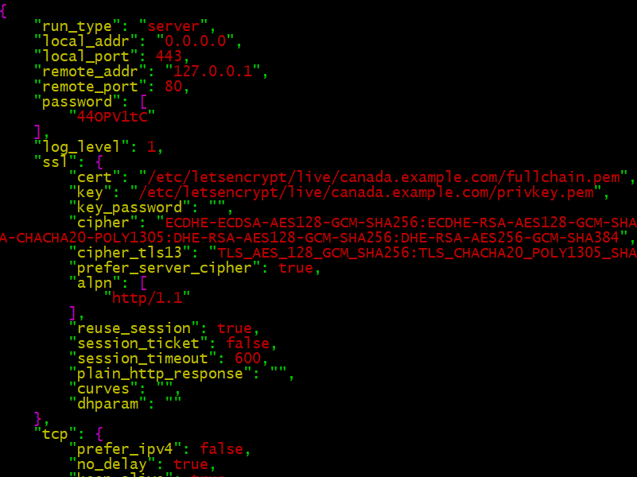

Trojan-GFW on CentOS, Igniter on Android
Trojan aims to help you bypass the Great Firewall (GFW) of China. It features multiple protocols over Transport Layer Security (TLS) to avoid both active and passive detection and Internet Service Provider (ISP) Quality-of-Service (QoS) limitations.
In this tutorial, you’ll see how to install Trojan on a CentOS server. We’ll go on to install Igniter on an Android device. Igniter is a Trojan client that is still under active development, so it may have changed substantially by the time you read this tutorial.
CentOS is a community recompilation of Red Hat Enterprise Linux (RHEL), which in turn is based on Fedora. Since RHEL undergoes multiple rounds of quality assurance (QA) before it is released, CentOS has a reputation for being conservative and stable. In this tutorial we use the latest release, which is CentOS 8.
Android continues to be the most popular mobile operating system, running on around five out of every six mobile devices.
1. Preparation
Before you begin this tutorial, you will need four things:
- A domain name. Since the goal is to look as much like a real web server as possible, a paid domain name is better than a free domain name.
- A server. We will use a virtual private server (VPS). Censors often suspect that a VPS from a popular provider is being used for censorship circumvention. Vultr and Bandwagon Host are popular providers. Therefore it is best to obtain your VPS from a different provider.
- DNS records. At a minimum, you will need
a DNS
Arecord pointing from your hostname to your server. In this tutorial we usecanada.example.comas a sample hostname. - An Android device. It is assumed that you own an Android phone or tablet.
2. Set Up Server
2.1. SSH as Root
Log in to your server using a tool such as PuTTY, XSHELL, or PowerShell (if you use Windows on your workstation), or the SSH command in a terminal emulator (if you use Linux or Mac on your workstation).
If your VPS provider sent you a root password by email, then change the root password to something only you know:
passwd root
If you do not know the root password, then SSH in as a non-root user, and set the root password:
sudo passwd root
If you logged in as a non-root user, then switch to the root user now:
su -
2.2. Update Server
Get your entire system up to date by issuing as root the command:
yum update
2.3. Install Enhanced Editor
Optionally install the enhanced editor:
yum install vim-enhanced
Map the vi command to vim:
alias vi=vim
Also edit /etc/profile and insert the same
command to apply automatically to future logins:
alias vi=vim
2.4. Implement BBR Congestion Control
Bottleneck Bandwidth and Roundtrip propagation time (BBR) is a congestion control algorithm for Transmission Control Protocol (TCP). It aims to achieve higher bandwidths and lower latencies.
Create a new system control parameters file for BBR:
vi /etc/sysctl.d/50-bbr.conf
Insert the two lines that specify the BBR congestion control algorithm:
net.core.default_qdisc=fq
net.ipv4.tcp_congestion_control=bbr
Write the file to disk, and quit the editor. Activate these changes now:
sysctl -p /etc/sysctl.d/50-bbr.conf
2.5. Install Firewall
Many hackers attempt to brute-force their way into servers with open SSH ports. Therefore we will protect our server with a firewall.
FirewallD may already be active (running). You can check this with the command:
systemctl status firewalld
If FirewallD is not active and running, then install and start it now:
yum install firewalld
systemctl enable firewalld
systemctl start firewalld
2.6. Configure Firewall
Now that FirewallD is active (running), use the trusted zone
to whitelist your own IP address for access to SSH. First add SSH to
the trusted zone:
firewall-cmd --permanent --zone=trusted --add-service=ssh
For the next step, you need to know your workstation’s Internet Protocol (IP) address. If you do not know your IP address, you can find it out by opening a browser and visiting https://www.ipip.net or https://whatismyipaddress.com.
Let’s assume your workstation’s IP address is
11.22.33.44. If that is realtively fixed, whitelist your
IP address for access to port 22,
which is the port you use for SSH:
firewall-cmd --permanent --zone=trusted --add-source=11.22.33.44/32
Alternatively, you can open port 22 for a range
of IP addresses. For example, if your ISP allocates addresses in the range
11.22.0.0 through 11.22.255.255, you could open
port 22 for the entire range like this:
firewall-cmd --permanent --zone=trusted --add-source=11.22.0.0/16
Do not open port 22 for the entire world.
Reload the firewall rules:
firewall-cmd --reload
Check that the results show your expected source
and services:
firewall-cmd --zone=trusted --list-all
We now prevent any other public IP addresses from reaching port 22
(the SSH port) by removing the ssh service from the
public zone.
Also remove cockpit (server management GUI)
from public access.
firewall-cmd --permanent --zone=public --remove-service=ssh
firewall-cmd --permanent --zone=public --remove-service=cockpit
firewall-cmd --reload
firewall-cmd --zone=public --list-all
Finally, we will open ports 80 and 443
to the public:
firewall-cmd --permanent --zone=public --add-service=http
firewall-cmd --permanent --zone=public --add-service=https
firewall-cmd --reload
firewall-cmd --zone=public --list-all
In some cloud providers, you must also open ports 22,
80, and 443 for input
in the VPS’s “Security Group.”
2.7. Install Nginx
Install and start Nginx:
yum install nginx
systemctl enable nginx
systemctl start nginx
2.8. Harden Nginx
Prevent visitors from issuing unwarranted HTTP requests.
Create /etc/nginx/default.d/requests.conf:
vi /etc/nginx/default.d/requests.conf
Insert a block:
if ($request_method !~ ^(GET|HEAD|POST)$ )
{
return 405;
}
Write the file to disk, and quit the editor.
2.9. Configure Nginx
Edit /etc/nginx/nginx.conf:
vi /etc/nginx/nginx.conf
Set the server name.
For example, if your hostname is
canada.example.com, then
change the line for server_name to read:
server_name canada.example.com;
Write the file to disk, and quit the editor.
Create /etc/nginx/default.d/404.conf:
vi /etc/nginx/default.d/404.conf
Add a custom 404 page (this is the page served
if the visitor requests a page that is not found):
error_page 404 /index.html;
Write the file to disk, and quit the editor.
Restart Nginx with its new configuration:
systemctl restart nginx
2.10. Add Website Content
Add some sample content to the web server:
yum install wget zip unzip
wget https://github.com/lionlibr/sample-hexo-blog/archive/master.zip
unzip master.zip
cd sample-hexo-blog-master
cp -rf public/* /usr/share/nginx/html/
You can now test that your basic web server and its content
appear as expected in a browser. Even if your DNS records have
not had time to propagate yet, you can still request the page by
IP address (e.g. http://55.66.77.88).

2.11. Obtain Let’s Encrypt SSL Certificate
The Let’s Encrypt offers free SSL certificates. These allow your website to be served as HTTPS as well as, or instead of, HTTP.
Before you do this step, you need to check that your hostname DNS records have propagated, so that the hostname points to your server IP address:
yum install bind-utils
nslookup canada.example.com 8.8.8.8
Assuming your server IP address is returned, you can now proceed. Download the Certbot client for Let’s Encrypt:
wget https://dl.eff.org/certbot-auto
Move Certbot into a directory in your execution path:
mv certbot-auto /usr/local/bin/certbot-auto
Make it executable:
chmod 755 /usr/local/bin/certbot-auto
Run Certbot for Nginx:
certbot-auto certonly --nginx
Certbot will download and install any extra packages it requires.
Respond to the Certbot prompts:
- Enter your email address
- Enter
afor agree - Enter
yornto share your email address - Select the appropriate number of your hostname that you require a certificate for
Let’s Encrypt SSL certificates are valid for 90 days. Set everything up for automatic renewal every 90 days:
echo "0 0,12 * * * root python3 -c 'import random; import time; time.sleep(random.random() * 3600)' && /usr/local/bin/certbot-auto renew" | tee -a /etc/crontab > /dev/null
2.12. Install Trojan
Download and run the Trojan installer:
curl -O https://raw.githubusercontent.com/trojan-gfw/trojan-quickstart/master/trojan-quickstart.sh
bash trojan-quickstart.sh
This downloads the Trojan executable into
/usr/local/bin, which should be in your
execution path. You can check this with the commands:
ls -l /usr/local/bin
echo $PATH
It also creates a trojan.service file in
/etc/systemd/system.
This expects the Trojan configuration file to be in
/usr/local/etc/trojan/config.json.
2.13. Generate Password
Issue the command:
openssl rand -base64 6
The result is a 6-byte (48-bit) password, expressed as 8 characters in base-64 notation. We will use this as an example:
44OPV1tC
If you want a stronger password, you can increase the number of bytes. For example:
openssl rand -base64 24
will give you a 32 characters when converted to base-64.
2.14. Configure Trojan
Configure Trojan by editing the configuration file
/usr/local/etc/trojan/config.json.
vi /usr/local/etc/trojan/config.json
Make these changes to the default configuration.
Replace canada.example.com by your actual hostname in the
examples below:
- Insert your own value for
password1and remove the trailing comma - Delete the line for
password2 - Your certificate is in
/etc/letsencrypt/live/canada.example.com/fullchain.pem, so specify that on thecertline - Your key is in
/etc/letsencrypt/live/canada.example.com/privkey.pem, so specify that on thekeyline
Here is a screenshot of the values we have changed:
Write the file to disk, and quit the editor.
2.15. Run Trojan
After writing the file to disk and quitting the editor, make Trojan start after every reboot, and start it now:
systemctl enable trojan
systemctl start trojan
Trojan is now listening on port 443,
while Nginx is listening on port 80.
2.16. Exit SSH Session
Your work on the server is done for now. Exit your SSH session by typing the command:
exit
3. Set Up Client
Now work on your Android phone or tablet.
3.1. Install Igniter
Download the most recent Igniter apk release from
Github.
Right now the latest version is igniter 0.1.0-pre-alpha13.
This may have changed by the time you read this tutorial.
After you have downloaded the apk, install the app.
3.2. Configure Igniter
Open the Igniter app. Insert values corresponding to your server. In our example, these values are:
- Server
canada.example.com - Port
443 - Password
44OPV1tC
3.3. Connect
Click the START button.
Android warns you that Igniter wants to create a VPN connection. Click OK.
3.4. Test
End-to-end test your entire configuration (server and client) by opening a browser on your Android device and visiting https://ipchicken.com.
You should see your server IP address, not your client IP address.
3.5. Disconnect
Click the STOP button.
4. Troubleshoot Issues
You can find more information on Trojan on the wiki at https://github.com/trojan-gfw/trojan/wiki.
If you have any problems, here are some steps you can take to troubleshoot.
Firstly, double-check that your client configuration file is an exact match for the settings on your server.
On the CentOS server, you can look for messages with these commands:
systemctl status trojan
journalctl -u trojan
tail /var/log/nginx/error.log
You can ask questions about Trojan in the Telegram Messenger group Trojan-GFW.
If you have an issue with Trojan-GFW core, you can create a new issue on https://github.com/trojan-gfw/trojan/issues.
If you have a problem with Igniter for Android, you can create a new issue on https://github.com/trojan-gfw/igniter/issues.
For general CentOS problems, you can ask on https://forums.centos.org/.
For general Android problems, you can ask on https://androidforums.com/.